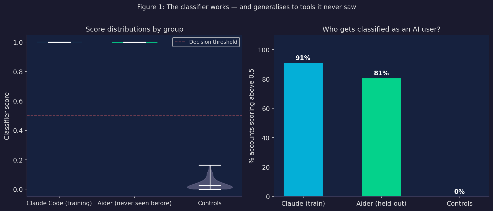
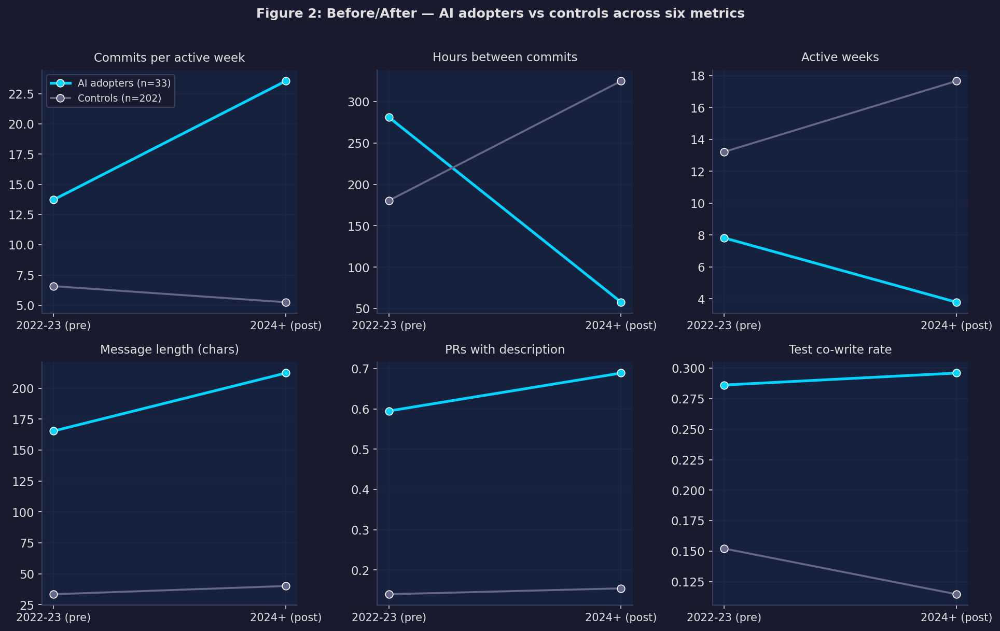
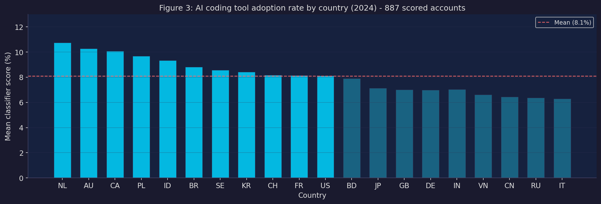

This is an experiment. I wrote this blog post by collaborating with my AI agent (Hermes). I gave it a research question and some data, we iterated on the analysis together, and the final write-up is a collaboration between us. The Ankh-Morpork Scramble post on this site was built the same way.
If you’re reading this on andreasthinks.me, you’re reading the human-curated version. The AI-generated version (with different styling, more metrics, and fewer apologies for the messy bits) lives at ai-at-play.online.
I’ve been sitting on this research for a while, and given my resolution to share more unfinished work, here it is.
I wanted to answer a question that’s been nagging at me since I started using Claude Code properly: does using AI coding tools actually make you more productive? Not in the “I feel like I’m going faster” sense — in a measurable, show-me-the-data sense.
This question got sharper for me when I read this excellent piece from Answer.AI (Gallagher & Dimmendaal, March 2026). They looked at PyPI package creation and update rates and asked: if developers are really 2x, 10x, 100x more productive, where’s the software? Their headline finding: no broad productivity boom visible across the ecosystem. The one exception is packages about AI — those are being updated at 2x+ rate — but they argue that’s money and hype flowing into AI infrastructure, not developers becoming superhuman.
It’s a genuinely good piece of work and I think they’re largely right. But it left me with a follow-up question. Their unit of analysis is the aggregate PyPI ecosystem. What if the effect is real but concentrated — visible in the behaviour of individual adopters, but not yet large enough to move the aggregate needle? That’s what this project tries to get at.
Along the way we also built something I think is independently useful: a classifier that can tell whether a developer is using AI tools just from looking at their public commit history.
Here’s what we did, what we found, and how I think it fits with the Answer.AI result.
This is work in progress. The methods are solid, the results are real, but this hasn’t been peer-reviewed and the country-level analysis needs more data to be conclusive. I’m sharing it now because the account-level findings are strong enough to be worth talking about. Comments very welcome.
The measurement problem
Everyone is claiming AI tools make developers more productive. The vendors say so. Developers I respect say so. I say so. But where’s the data?
The problem is that AI tool usage is almost entirely invisible in public data. When you use GitHub Copilot inline completion or ask Claude to write a function, nothing in your commit history records that. There’s no timestamp, no log, no trace.
This makes it really difficult to do the kind of before-and-after comparison that would let you actually measure the effect. You’d need to know who started using AI tools and when — and that’s the data nobody has at scale.
The insight that unlocked this project: even if AI tool usage leaves no explicit trace, it might change how developers work in ways that are detectable. If AI assistance makes it cheaper to commit frequently, easier to write PR descriptions, or faster to iterate — those behavioural signatures should show up in the commit history even when the tool itself doesn’t.
So instead of trying to observe AI tool use directly, we built a classifier that looks for those behavioural signatures.
Building the detector
Finding ground truth
First, we needed confirmed examples of AI tool users. It turns out there are explicit traces — they’re just rare. Some developers:
- Add a
CLAUDE.mdfile to their repos (an Anthropic convention for project context) - Have commits with
Co-Authored-By: Claude <noreply@anthropic.com>trailers - Have
.claude/config directories
We scraped GitHub Archive data to find these — about 33 accounts with clear Claude Code usage, confirmed from multiple evidence types. Then we found 202 control accounts: active developers with no AI markers anywhere in their history, with activity in both 2022-23 and 2024 (so we could compare before and after).
What features to use
The tricky design constraint: we can’t use the explicit markers as classifier features. That would just build a model that rediscovers its own labels. The classifier needs to detect AI-assisted development from behaviour that’s correlated with AI adoption but not definitionally equivalent to it.
We extracted 43 features per account:
- Message and documentation: commit message length, whether messages use conventional commit format, whether PRs have descriptions
- Activity tempo: how often they commit when active, time between commits, whether they commit in bursts
- Pre/post changes: deltas of all the above between 2022-23 and 2024
That last category is important. We’re not just asking “does this person have long commit messages” — we’re asking “did their commit messages get longer after AI tools launched?”
How well does it work?

The classifier achieves a cross-validated AUC of 0.940 on the training set. That’s quite strong — for context, AUC 0.5 is random chance and 1.0 is perfect.
But the more interesting result is what happens when you apply it to Aider users — a completely different AI coding tool that the classifier was never trained on. Aider accounts score an average of 0.727, compared to 0.776 for Claude users and 0.033 for controls. 80% of Aider users score above the decision threshold, compared to 91% of Claude users and 0% of controls.
The classifier generalises across tools. It’s not detecting “this person types like Claude writes” — it’s detecting something more fundamental about how AI-assisted development changes behaviour.
What’s driving the classification?
We tested this directly by removing all the message and documentation features — commit message length, conventional commit format, PR descriptions — and retraining with only timing and activity features.
AUC drops from 0.940 to 0.909. A 3-point drop.
The model still works almost as well using nothing but commit frequency, inter-commit timing, and burst patterns. The classifier is picking up a real change in development tempo, not just learning to recognise verbose AI-generated commit messages.
What actually changes when you adopt AI tools?
This is where it gets interesting. We have 235 accounts with before-and-after behavioural data. We can run a proper difference-in-differences — compare how AI adopters changed relative to how controls changed over the same period.

The picture that emerges is consistent across multiple metrics:
AI adopters commit much more frequently when they’re active. Hours between commits drops from 281 to 58 — roughly a 5× increase in commit velocity during coding sessions. Controls go the opposite direction, from 180 to 325 hours.
But they have fewer active weeks. The pattern isn’t “more constant activity” — it’s more concentrated, intense sessions with longer gaps. Fewer days at the keyboard, but significantly more output per day.
Documentation improves sharply. The fraction of pull requests with a proper description goes up by 32 percentage points. Test co-write rate (commits that touch both implementation and test files) increases too.
Here’s the formal regression — for each outcome, we estimate how much more AI adopters changed relative to controls, controlling for their pre-period baseline:
Outcome Treatment effect SE Sig
Commits / active week +13.07 (3.07) ***
Hours between commits -275.26 (37.65) ***
Active weeks -11.25 (1.71) ***
Message length (chars) +54.26 (26.13) *
PR has description +0.32 (0.09) ***
Test co-write rate +0.14 (0.06) *
Conventional commits +0.08 (0.05)
* p<0.05 ** p<0.01 *** p<0.001 | N=235 (33 treated, 202 controls)
Estimator: OLS with pre-period control, HC3 robust standard errorsFive of the seven outcomes are statistically significant, and all survive Benjamini-Hochberg FDR correction for multiple testing (q < 0.05). The two strongest:
- Commits per active week: +13.1 (p < 0.001). When you’re coding, you commit 13 more times per week.
- Hours between commits: −275 (p < 0.001). Your commit cadence becomes roughly 5× faster.
The results hold when restricting to the 25 high-confidence adopters (those where we have a confirmed adoption timestamp), and when winsorising outcomes at the 5th/95th percentile to guard against outlier influence. The pattern is robust.
Important caveats
I want to be direct about something the peer review of this work flagged, and I think it’s right. What we’re measuring is commit behaviour — not output, not features shipped, not bugs fixed. A developer who makes 20 small commits instead of 5 large ones isn’t necessarily four times more productive.
What the data actually shows is a change in working style: AI adopters commit at a finer granularity, document PRs more thoroughly, and co-write tests more often. That’s genuinely interesting and probably reflects AI assistance lowering the cost of incremental commits. But it’s not the same as measuring whether they’re building more software.
Whether this behavioural change translates to actual output gains — features shipped, issues closed, PRs merged — would need a different dataset to establish. This study can’t answer that. I’ve reframed the paper accordingly.
There’s also a circularity problem. The classifier is trained partly on the same behavioural features that serve as DiD outcomes — specifically, changes in commit frequency and inter-commit hours are among the classifier’s strongest signals. Accounts classified as AI adopters are partly those with the largest shifts in exactly the things we then measure. Finding large DiD coefficients is partly baked in by construction. The direction is real, but treat the magnitudes as upper bounds.
The sampling problem
The people in our treated group aren’t a random sample of AI tool users. They’re developers who configured their tools to leave explicit traces in their commit history — CLAUDE.md files, co-author trailers. That’s probably correlated with being a particularly engaged, careful user.
The effect sizes here are likely an upper bound on the average effect across all AI tool users. The direction is real. The magnitude might be optimistic.
Does it show up at the country level?
The account-level result is interesting but has selection problems. The stronger test is: do countries where more developers have adopted AI tools show higher productivity growth?
We built a dataset of 887 GitHub accounts with location data mapped to country, scored each one with the classifier, and used the mean score per country as an AI adoption rate. Then we merged that with country-level GitHub productivity data across 2022–2024 and ran a panel regression.

The result: no significant effect at the country level (coefficient −6.06, p = 0.45, N = 59 country-year observations across 20 countries).
I want to be careful about what this does and doesn’t mean.
It doesn’t mean AI tools have no effect on how developers work. The country-level analysis has serious statistical limitations:
Our GitHub commit activity panel has a median of 2 developers per country-year. You’re estimating national patterns from 2 people. The noise is enormous.
The cross-country variation in AI adoption rates is narrow — the range across 20 countries is only 4 percentage points. Small differences in a noisy outcome variable are genuinely hard to detect.
We only have one year of post-treatment data (2024). Country-level effects of technology adoption typically take several years to show up.
The placebo test makes this concrete. When we randomly shuffle which country gets which adoption rate 1,000 times and re-run the regression each time, we get a distribution of coefficients with mean −0.13 and standard deviation 5.4. Our actual coefficient of −6.06 falls comfortably inside that distribution — about 27% of random permutations produce something at least as extreme. The panel simply doesn’t have the power to distinguish a real effect from noise. That’s not a finding; that’s a limitation.
The honest interpretation: this design can’t see the country-level effect even if it’s real. The individual-level result says something is happening to how AI adopters work. The country-level result says we can’t detect it in the aggregate yet.
What I actually think this means
A few things stick with me from this project — including some things that came out of getting the paper reviewed.
This fits with the Answer.AI finding, but adds a layer. Gallagher and Dimmendaal found no broad productivity boom in PyPI. Our country-level null is consistent with that — we also can’t see the effect in aggregate data. But the account-level result suggests something is changing in how confirmed AI adopters work, just concentrated in that subset. The aggregate signal is too noisy and adoption too uneven to surface in national commit statistics over one year.
The signal is about tempo, not output. The strongest signals are in how frequently developers commit and how much time elapses between commits — not in raw lines of code or features shipped. AI adopters seem to work in more concentrated, intense sessions with more frequent commits and better documentation. That’s a change in working style more than a change in productivity narrowly defined. It matches the subjective experience of using these tools: fewer context switches, faster iteration within a session, lower cost to just commit the thing.
A reviewer of the paper made this point well: we can’t claim this measures productivity without showing the commit changes correspond to more actual output. They’re right. I’ve reframed the paper to make that explicit. What we’ve built is a detector of how AI tools change developer behaviour — not a productivity meter.
The classifier result is independently useful. We’ve demonstrated that AI coding tool adoption is detectable from public commit behaviour at AUC 0.940, generalising across tools. That opens up possibilities for measuring adoption at scale without surveys or vendor data. The ablation result — AUC 0.909 with only timing features, no message content — means you could do this without even reading commit messages, which is cleaner from a privacy standpoint.
On the selection problem. The honest version of this finding is: developers enthusiastic enough to configure CLAUDE.md files and co-author trailers work differently after adoption than matched controls. That’s probably the upper end of the effect distribution. The median GitHub user who occasionally uses Copilot autocomplete may show nothing — consistent with the Answer.AI null at the ecosystem level.
What’s next
A few things I’d love to do with more time:
Scale up the commit activity panel. The binding constraint on the country-level analysis is the noise in the outcome variable. Moving from 500 to 5,000+ developers per quarterly sample would substantially change the picture.
Link behaviour to output. The ideal follow-up would connect the commit behaviour changes we detect to actual output measures — PR merge rate, issue closure, deployment frequency. That would answer whether the tempo change translates to more software shipped.
Longer time horizon. Come back to this in 2027 with 2–3 years of post-2024 data.
The paper version (with formal methods, equations, robustness checks, and a proper limitations section) is here, and also published on Octopus across five linked publications. The full code and data are on GitHub. Please do steal the classifier if it’s useful for you.
Thanks to Avery for doing most of the actual work on this.
The full working paper — with formal methods, equations, robustness checks, and a proper limitations section — is available here. A PDF version is also available.
All code is in the ai_productivity_analysis repo. The main notebooks are:
notebooks/research_paper_v2.ipynb— the formal write-up (v2, peer-reviewed revision)notebooks/account_level_did.ipynb— the full diff-in-diff analysisscripts/build_panel_v2.py— country-level regression
You’ll need a GitHub PAT with read access to reproduce the scrape. The trained classifier model (data/classifier_model.pkl) is committed to the repo so you can score accounts without re-running the scrape.